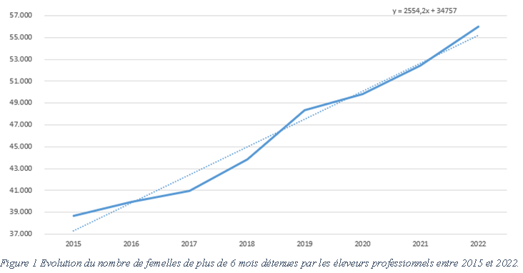
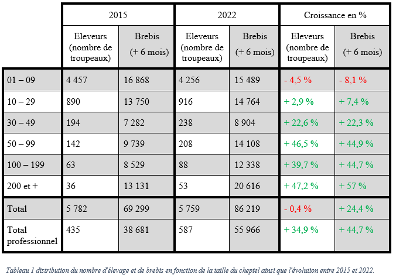
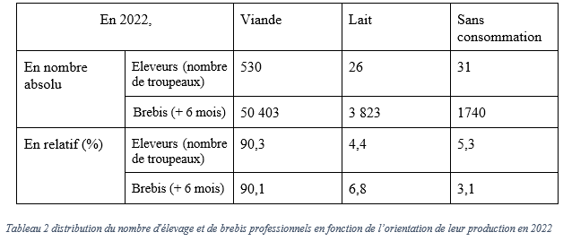

L’élevage ovin a le vent en poupe depuis quelques années. C’est le bruit qui court dans les campagnes, mais est-ce vrai ? Quels sont les indicateurs qui peuvent soutenir cette rumeur ? Est-ce qu’il y a encore de la place pour de nouveaux éleveurs ou le marché est déjà saturé ? Quels sont les objectifs de la filière à l’avenir ?
Nicolas Marchal chargé de mission ovin – caprin au collège des producteurs.
Depuis 2018, la filière ovine wallonne s’est vue dotée d’un plan de développement stratégique avec des objectifs clairs pour 2030. La filière doit tripler sa production pour atteindre un taux d’auto-suffisance de 35 % en viande et de 20 % en lait. Cela doit se faire, entre autres, par l’organisation de filières structurées, par l’installation de nouveaux élevages et par l’augmentation de la taille du cheptel moyen.
La réponse est définitivement oui. L’engouement relevé en 2018 lors de la sortie du plan de développement stratégique se confirme. L’élevage ovin attire, mais pas n’importe qui. Des professionnels !!!
Le cheptel total de brebis reproductrices s’est renforcé entre 2015 et 2022 de 16 920 têtes. Mais le nombre de brebis détenues par les éleveurs professionnels a suivi une trajectoire plus forte encore avec 17 285 femelles supplémentaire.
Comment cela est-ce possible ? Les éleveurs professionnels sont les détenteurs d’au moins 30 femelles, de plus de 6 mois. Ces éleveurs se sont développés tandis que le cheptel détenu par les hobbyistes à diminué sur la même période de 365 femelles. C’est un premier indice de la professionnalisation du cheptel.
L’évolution du nombre de brebis est positive chez les éleveurs professionnels avec un gain d’environ 2 500 reproductrices par an. Cette augmentation est continue sur la période de référence, 2015 – 2022. Le graphique 1 montre cette évolution des femelles de plus de 6 mois chez les éleveurs de plus de 30 brebis.
En moyenne sur la période de référence, ce sont 24 nouveaux élevages professionnels qui se sont installés chaque année. Ce sont donc 152 troupeaux professionnels en plus sur la région, passant le total de 435 à 587. La principale voie d’entrée dans l’élevage professionnel est l’élevage hobbyiste. Peu de nouveaux éleveurs professionnels commencent avec des grandes troupes directement. Dans la majorité des cas, ce sont des troupeaux qui commencent avec 10 – 15 mères et qui évoluent au cours du temps vers de plus grands cheptels. Ce modèle est certes plus lent, mais certainement à conseiller aux nouveaux éleveurs. Cela n’engage pas de grosses dépenses et laisse la possibilité d’essayer l’élevage avant de se lancer à plus grande échelle.
La taille moyenne du cheptel des professionnels suit la même tendance. Un élevage possédait 89 brebis en moyenne en 2015 pour atteindre les 95 brebis l’année dernière. Cette augmentation des troupes montre l’attrait de l’élevage ovin pour tous ceux qui s’installent et ceux déjà en place. Tous les éleveurs investissent dans l’augmentation de la production.
Le tableau 1 présente le nombre d’éleveurs et de brebis par catégorie de taille de cheptel en 2015 et 2022 ainsi que la croissance de chacune de ces catégories.
La professionnalisation du cheptel est donc bien en place. Il y a de plus en plus de moutons en Wallonie. Cependant, cela ne se traduit pas par une augmentation du nombre total de cheptels (-0,4 %) mais par une augmentation du nombre de cheptels professionnels (+34,9 %).
La production en agriculture biologique se porte bien.
En Wallonie se trouvait, en 2022, 25 833 ovins détenus par 223 éleveurs possédant au moins 10 moutons. La distinction entre les ovins et les brebis n’étant pas faite totalement et les données disponibles n’étant pas toutes récoltées de la même façon, il n’est pas possible de comparer complètement les données.
Cependant, la croissance du nombre d’ovins sous certification Agriculture Biologique est semblable à la croissance totale. Il y a près de 10 000 ovins bio en plus sur la période de référence 2015 – 2022.
Il y a donc environ 20 % du cheptel de reproductrices wallonnes qui est certifiée. Cette proportion ce maintien avec la croissance de la production. C’est donc bon signe pour le secteur. Il n’est quand même pas souhaitable d’augmenter plus vite la proportion de moutons en agriculture biologique sous peine de déséquilibrer les marchés et d’arriver aux déclassements de carcasses en conventionnel.
La production viandeuse en Wallonie représente 90,1 % des femelles détenues par des éleveurs professionnels. Dans ces éleveurs, 90,3 % font de la viande. C’est donc la production majoritaire en Wallonie largement devant les autres spéculations.
Cela peut s’attribuer au fait que la production viandeuse est plus facilement accessible aux éleveurs double actif. Le temps d’astreinte est plus faible pour cette spéculation alimentaire. Le développement de filières organisées et structurées pour la viande permet également de favoriser ce type d’élevage.
Le lait qui est la seconde production alimentaire des moutons ne représente que 6,8 % des reproductrices et 4,4 % des détenteurs professionnels. Il y a donc en Wallonie plus d’éleveurs professionnels dont le but n’est pas la production alimentaire que de producteurs dont le but est de produire du lait. Fort heureusement, les producteurs de lait détiennent globalement plus de brebis.
La différence entre la non-production et le lait peut en partie s’expliquer par l’absence complète de collecte de lait. Les éleveurs doivent donc souvent transformer eux-mêmes leur lait ou conclure des partenariats directs avec des fromagers. Il est nettement plus complexe et astreignant de devoir traire et transformer son lait pour en vendre les produits que de pouvoir se concentrer sur la production et la zootechnie en envoyant le lait vers l’aval de la filière. Ces éleveurs laitiers font souvent l’ensemble des métiers de la filière.
Tandis que la non-production est facilement accessible puisque le foncier se limite à des réserves naturelles et de l’entretien de paysage. Les performances zootechniques n’étant pas un facteur de revenu, le temps d’astreinte n’en est qu’encore plus limité. Le revenu dans ce cas dépend d’autres choses que de la production ovine en tant que tel. Il est a noté tout de même que même l’entretien des paysages peu être productif pour le secteur alimentaire.
L’âge moyen est de 49 ans
La production ovine attire des jeunes. Cette caractéristique est typique de l’élevage ovin. L’âge médian en agriculture est de 58 ans, soit près de 10 ans en plus que les bergers wallons. Le mouton, est-il une porte d’entrée en agriculture ?
Les ovins présentent de nombreux avantages qui permettent à des jeunes d’installer cette spéculation dans leurs exploitations.
L'état de la production ovine belge et wallonne en 2023.